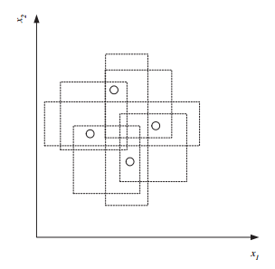

Headline: [8]Introduction to Machine Learning: (chapter two[2])
Supervised Learning: Vapnik-Chervonenkis Dimension (第二章[2])
声明: 本篇博文为本人阅读机器学习导论的读书笔记
为什么选择英文版？Why am i rewrite?
由于本人惨不忍睹的英语，于是首先选择了中文版，可是，昨天突发奇想，反正机器学习也是不会，英语也是不会，不如省事一点一起学，于是，我选择了英文版
注: 前面章节出现的词汇不会重复解释，完成本书词汇表，本书完结时提供
Supervised Learning
Vapnik-Chervonenkis Dimension
课外读物
1971年，V. Vapnik and A. Chervonenkis在论文“On the uniform convergence of relative frequencies of events to their probabilities”中提出VC维的概念
More info: VC维理论的来龙去脉
uniform ['juːnɪfɔːm] 统一的，一致的，相同的，均衡的，始终如一的，制服，使成一样
正文
这一节，自己并不能很好的理解，就先简单介绍，等整本书看完，在回过头来看“VC维与泛化”
Let us say we have a dataset containing N points. These N points can
be labeled in ${2^N}$ ways as positive and negative. Therefore, ${2^N}$ different learning problems can be defined by N data points. If for any of these problems, we can find a hypothesis h ∈ H that separates the positive examples from the negative, then we say H shatters N points. That is, any learning problem definable by N examples can be learned with no error by a hypothesis drawn from H .
The maximum number of points that can be shattered by H is called the Vapnik-Chervonenkis (VC) dimension of H , is denoted as VC(H), and measures the capacity of H .
最大数量的(positive)点通过h区分出去叫做预测的vc维，也被表示为VC(H), VC维衡量着H的容量。
shatter ['ʃætə] 粉碎，打碎，破坏，破掉，使散开，碎片，损坏，乱七八糟的状态
definable [dɪ'faɪnəbl] 可下定义的，可确定的，可限定的，可解说的
Figure 2.6

**Figure 2.6** An axis-aligned rectangle can shatter four points. Only rectangles covering two points are shown.
In figure 2.6, we see that an axis-aligned rectangle can shatter four
points in two dimensions. Then VC(H), when H is the hypothesis class
of axis-aligned rectangles in two dimensions, is four. In calculating the
VC dimension, it is enough that we find four points that can be shattered;
it is not necessary that we be able to shatter any four points in two dimensions. For example, four points placed on a line cannot be shattered
by rectangles. However, we cannot place five points in two dimensions
anywhere such that a rectangle can separate the positive and negative
examples for all possible labelings.
axis-aligned rectangles 轴平行矩形
axis ['æksɪs] 轴，轴线，轴心国，时间轴，坐标轴
align [ə'laɪn] 使结盟，使成一行，匹配，排列，排成一行
aligned [ə'laɪn] 对齐的，均衡的，结盟，使成一直线，对齐尺寸，选项详解
place [pleɪs] 地方，住所，放置，任命，寄予，名列前茅，取得名次
placed [pleist] 放置，名列前茅的，安放的，摆在
VC dimension may seem pessimistic. It tells us that using a rectangle
as our hypothesis class, we can learn only datasets containing four points
and not more. A learning algorithm that can learn datasets of four points
is not very useful. However, this is because the VC dimension is independent of the probability distribution from which instances are drawn.
In real life, the world is smoothly changing, instances close by most of
the time have the same labels, and we need not worry about all possible
labelings. There are a lot of datasets containing many more data points
than four that are learnable by our hypothesis class (figure 2.1). So even
hypothesis classes with small VC dimensions are applicable and are preferred over those with large VC dimensions, for example, a lookup table
that has infinite VC dimension.
pessimistic [,pesɪ'mɪstɪk] 悲观的，厌世的，悲观主义，封闭式
pessimism ['pesɪmɪz(ə)m] 悲观，悲观主义，厌世主义
lookup ['lʊkʌp] 查找，检查
好了，今天的分享就到这里，我们明天继续。谢谢大家。
COMMENTS